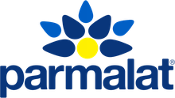
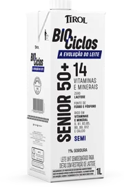
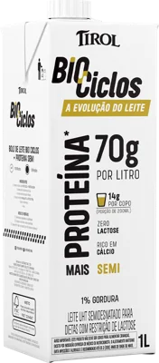

×
×Proposta 75LAB · Visibilidade no PDV
14 g no seu dia.
Fazer o BioCiclos + Proteína ser visto, entendido e escolhido no corredor de leites.

por copo de 200 ml
Quem somos
Não somos agência. Somos aceleradora de trade.
Marcas que já confiaram o PDV à 75LAB



Fonte: 75lab.com.br, números da 75LAB; carteira de clientes de 2025 e 2026.
A ideia, parte 2
Um bloco BioCiclos que transforma informação nutricional em reconhecimento imediato.
Mensagem principal
O benefício traduzido para a porção cotidiana.
Reconhecimento
O território BioCiclos, que liga o PDV à linha e à embalagem.
Camada funcional
Produto, benefício e preço organizados numa única área de decisão.
Frases de conceito para validação; a redação final segue os claims aprovados pela Tirol.
A ideia, parte 3
Estender a embalagem até a gôndola, em vez de inventar outra marca.
| TIROL | Marca endossante: familiaridade e confiança. |
| BIOCICLOS | Identidade de linha: reconhecimento no corredor. |
| + PROTEÍNA | Benefício: 14 g por copo de 200 ml. |
| ZERO LACTOSE | Apoio: visível, sem competir com a mensagem central. |
Branco · clareza e continuidade com a embalagem.
Preto · o contraste que a caixa branca não tem.
Dourado · destaque seletivo e qualidade.
Um bloco preto, branco e dourado que diz BioCiclos, Tirol e 14 g.
Proteína por copo, zero lactose, embalagem de 1 litro e preço legível.




Varejo alimentar · bloco de decisão
Na gôndola, o BioCiclos vira um bloco que se explica sozinho.
 BioCiclos
BioCiclosDE 200 mlZERO LACTOSE
14 gpor copoNa frente da prateleira, na altura do porta-preço, sem cobrir etiquetas.
Perpendicular, interrompe o olhar sem atrapalhar a circulação nem a retirada. Não precisa estar em todas as prateleiras.
Embalagens juntas e de frente para o shopper, com o preço da loja preservado.
Destaque superior ou ponta de gôndola onde houver espaço negociado.
Atacarejo · bloco de visibilidade
No atacarejo, a mensagem precisa chegar antes do shopper.
BioCiclosDE 200 mlZERO LACTOSE · 1 L
Superior ou painel frontal compacto, conforme a estrutura real: ponta, box de piso ou suporte autorizado.
Não bloqueia mercadoria nem reabastecimento; respeita empilhamento e regras da rede.
Embalagens e preços da loja continuam à vista.
Troca rápida e transporte fácil.
Roteiro de fala · tecla N
Índice · Tirol × 75LAB · Proposta
← → navegam · M abre e fecha este índice · N roteiro de fala · F tela cheia · Home / End